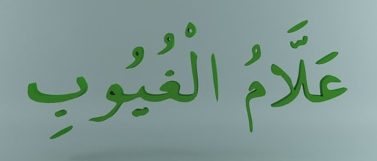
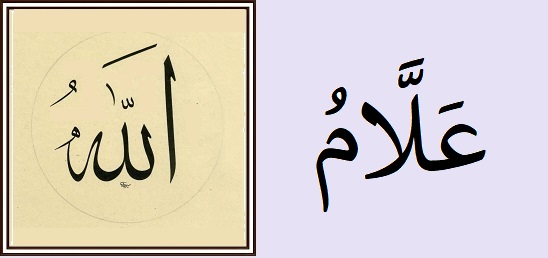

İlim sıfatlarıyla ilgili diğer iki isim için, anlamı çok yakın iki tamlama görüyoruz:
‘âlimul-gayb -- gaybı bilen
‘allâmul-guyûb -- gaybları iyi bilen
Tamlanan zaten belirli olduğu için, baştaki "el-" takısı düşer. Yaygın Esmâ listelerinde bulunmayan bu iki isim üstünde çok çalışılmamış, güzel bir hat levhası bulamadım. "Gaybı bilme" konusuna ışık tutan isimler olduğu için buraya aldım.
Gayb “gizli kalmak, gizlenmek, görünmemek, uzaklaşmak, gözden kaybolmak” anlamında masdar ve “gizlenen, hazırda olmayan bulunmayan şey” mânasında isim veya sıfat olarak kullanılır. Ayrıca, “duyular çerçevesine girmeyen ve aklın zaruri olarak gerektirmediği şey” ya da “kalplerde mevcut olsun veya olmasın gözlerden gizli kalan her şey” tarzında açıklanmış.
Kaynak: İslam Ansiklopedisi
İlk ifade ‘âlimul-gayb 12 ayette kullanılmış, yarısında "Görünmeyeni ve görüneni bilen" şeklinde:
okuyun.github.io/Kuran/#b=EAlm%20Algyb
13:9
‘âlimul-gaybi veş-şehâdetil-kebîrul-mute‘âl
Görünmeyeni ve görüneni bilendir, büyüktür, çok yücedir
İkinci ifade sadece "Görünmeyenleri iyi bilen" şeklinde: 
